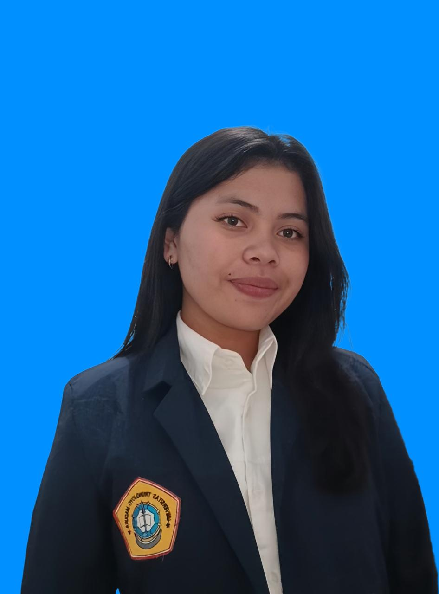

|
 |
Nama | Merrina Sagala |
| Nomor Telepon & Email | 081396853443/merinasagala03@gmail.com | |
| Alamat | Sumatera Utara, Kabupaten Samosir | |
| Deskripsi Diri | Perkenalkan nama saya Merrina Sagala, Saya anak ke-2 dari 5 bersaudara, saya suka bermain alat musik. Saya mahasiswa semester dua, di Universitas Trunodjoyo Madura prodi Sistem Informasi di Fakultas Teknik. |
| Nama Sekolah | Alamat Sekolah | Jurusan Sekolah | Prestasi di Sekolah | Tahun Sekolah |
| SMAN 1 SIANJUR MULA-MULA | Samosir, Sumatera Utara | IPA |
|
2022 |
| Universitas Trunodjoyo Madura | Madura | Sistem Informasi | Tidak Ada | 2025 |
| Nama Perusahaan | Deskripsi Perusahaan | Tahun Mulai | Daftar Jobdesk |
| Bank Central Asia | Bank Central Asia adalah bank swasta yang sedang bergerak di Indonesia maupun di dunia karna kepercayaan nasabah kepada bank central asia yang membuat bank ini menjadi bank terbaik se Asia. |
2029-pensiun |
|
| Nama Organisasi | Deskripsi Organisasi | Divisi/Departemen/Sie | Tahun Mulai-Berakhir | Daftar Jobdesk |
| OSIS | OSIS adalah organisasi Sekolah yang membantu dalam pengembangan bakat dan minat para siswa-siswi yang menjadi wadah antara guru dan siswa, selain itu osis ini juga dapat menjadi latihan dalam berorganisasi |
Bendahara Osis | 2023-2024 |
|
| UKM FT ITC | UKM-FT ITC adalah sebuah kelompok mahasiswa yang berkumpul untuk mengenali komputer sehingga
sekelompok itu disebut "Kelompok Pengguna Komputer(KPK)" |
Anggota | 2025-2027 | Hanya Anggota |